- Introduction
- Auto comment template
- Generic message for all
- Send message by filtering
- Create campaigns
- Auto reply report
- Auto comment report
- Latest Posts
- Enable auto reply
- Enable auto comment
- Latest comments
- Reports
Comment Growth Tools
The Comment growth tools is a fantastic feature of ChatPion. And you can easily use the feature. Just read the article and follow the commands, and “Comment growth tools” will be set to work instantly.
Once the feature starts working, it will continue without your supervision until you stop it. The feature will take full responsibility for interacting and dealing with your valuable clients via the Facebook page and Instagram accounts.
How to use the Comment growth tools
First, go to the dashboard of ChatPIon. At the left panel of the dashboard, you will see a menu called comment growth tools. Click on the menu.
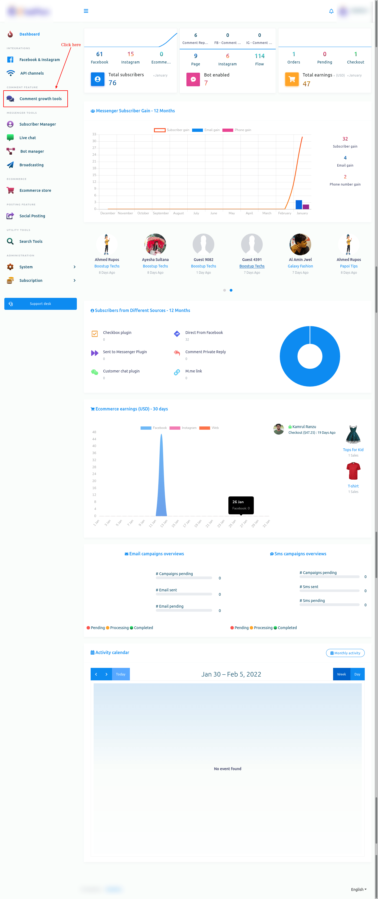Instantly, the Comment growth tools page will appear. The page has three options — Comment Template, Reply Template, Campaigns, and reports.
On the page, you can select Facebook or Instagram. If you want to create a campaign for Facebook, select Facebook. On the other hand, if you want to create a campaign for Instagram, select Instagram.
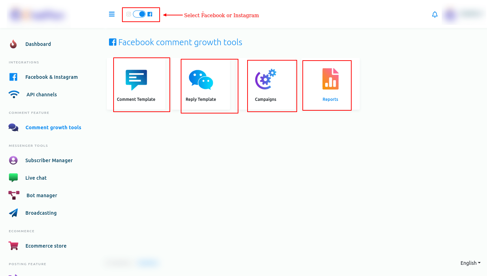Now let’s see how to create a Comment growth tools campaign for Facebook. Therefore, First, select Facebook.
Creating auto comment template
To create a comment template, click on the comment template option.
auto_comment_in_comment_growth_tools.png 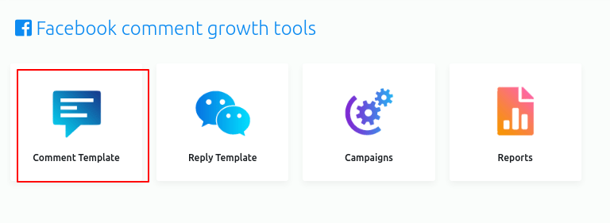Instantly, the Auto comment template manager page will appear with a button called Create new template. Now click on the Create new template button.
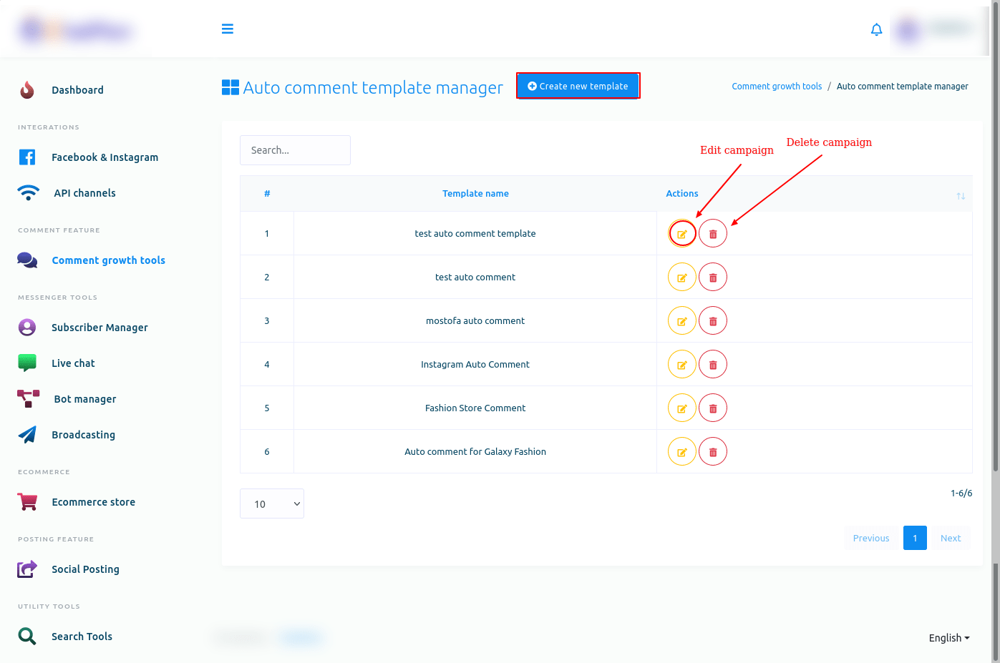Instantly, a modal form will appear— you have to fill out the form to create an auto comment template.
Write a ‘Template name’ in the ‘Template name’ box. Then write a comment in the ‘Auto comment’ box, the comment that will be made automatically under your Facebook pages’ posts. You can add as many comments as you want by clicking on the ‘Add more’ button. Then click on the ‘Save’ button.
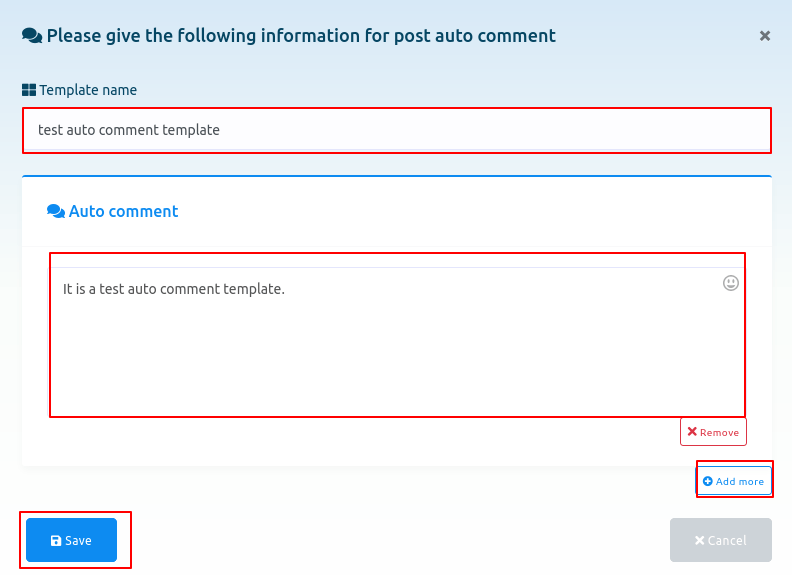Instantly, a successful message will appear.
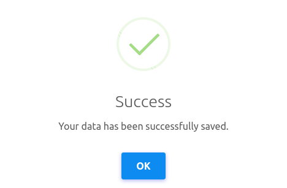Now the template is created, and you can see the template name on the page called ‘Auto comment template manager’. Next to the template name, you will see the ‘edit’ and ‘delete’ icons. By clicking on the ‘Edit’ icon, you can edit the campaign. And by clicking on the ‘Delete’ icon, you can delete the template. Of course, you can create another template by clicking on the ‘Create new template’ button— you can create as many templates as you want.
Creating auto reply template
To create auto reply template, click on the Reply template option on the Comment growth tool page.
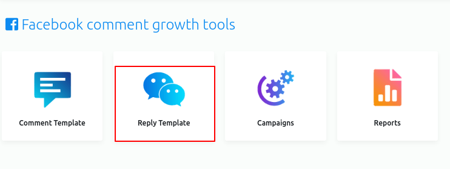Instantly, Auto reply template manager page will appear with a button called Create new template.
Now click on the Create new template button.
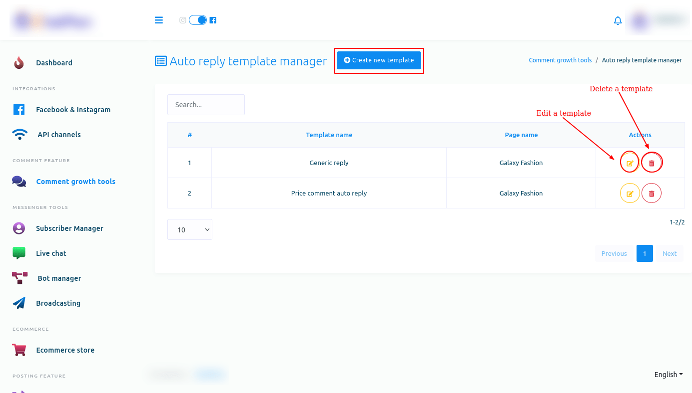Instantly, a modal form will appear — you have to fill out the form.
First, you have to select a Facebook page from the drop-down menu.
You can enable three options if you want to.
Generic message for all
After that, select Generic message for all option. And instantly, three fields will appear.
Write a template name in the Auto reply campaign name field.
Then write a message for Message for comment reply field.
After that, you have to select a message template for private reply.
Then click on the Save button.
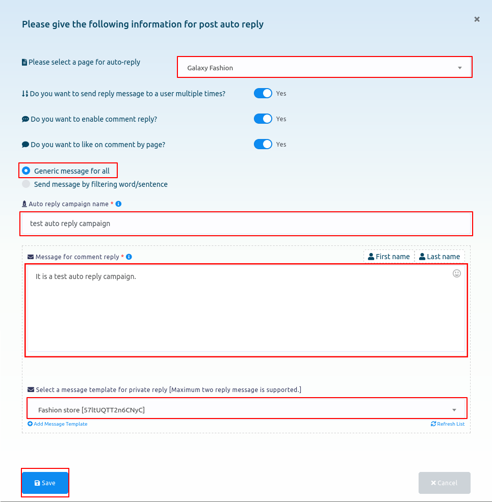Send message by filtering
On the other hand, if you select Send message by filtering word/sentence, some more fields will appear.
First, write a campaign name in the Auto reply campaign name field.
Then you have to enable one option from two options — Reply if the filter word exactly matches and Reply if any matches occurs with filter word.
Then you have to write filter word or sentence in appropriate field.
After that, write a message for Comment reply.
Then select a message template for private reply.
Then write a comment in the Comment reply if no matching found field.
Then select a message template for private reply if no matching found.
Then click on the Save button.

Create campaigns
To create campaigns, click on the Campaigns option on the Comment growth tools page.
Instantly, a Facebook comment automation campaign page will appear.
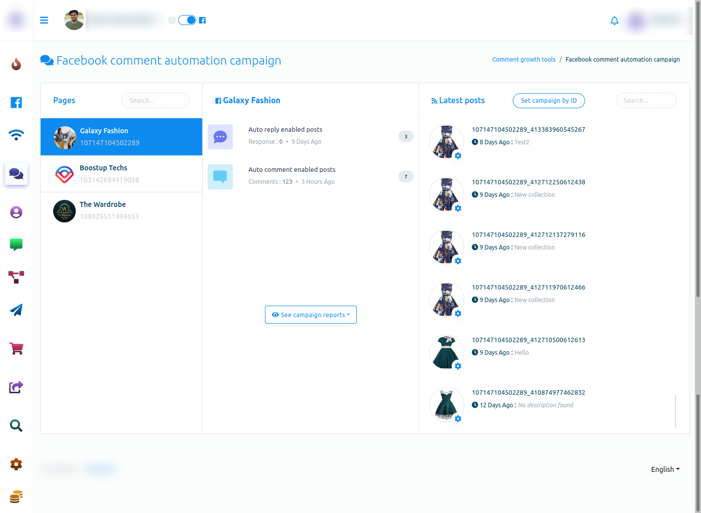The page is divided into three sections.
On the Pages section, you have to select a Facebook page. In the middle section, you can see reports.
Initially, you can see the number of auto reply enabled posts and auto comment enabled posts.
If you want to see campaign reports in detail, click on the see campaign reports button. Instantly, a drop-down menu of two options — auto reply report and auto comment report will appear.
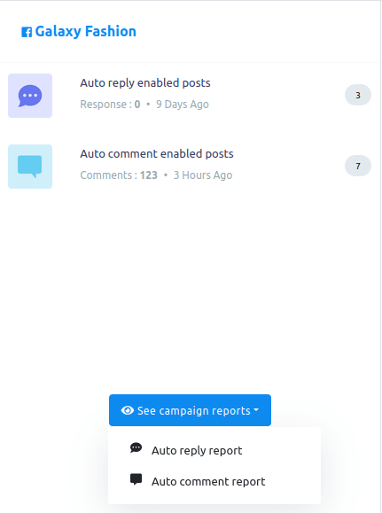 Auto reply reportAuto reply report
To see auto reply report, click on the auto reply report option.
Instantly, auto reply report of the selected page will appear.
On the page, you can see the details of the campaign. And you can edit, pause and delete any campaign and see the report of any campaign.
Click on the action button of a campaign and a pop-up menu of four buttons — eye icon button, edit button, pause button, and delete button.
To see the report of a campaign, click on the eye icon button.
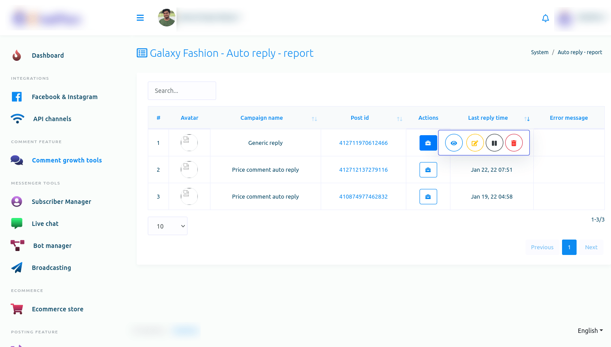Instantly, a modal called Report of auto reply will appear. On the modal, you can see the report of the auto reply.
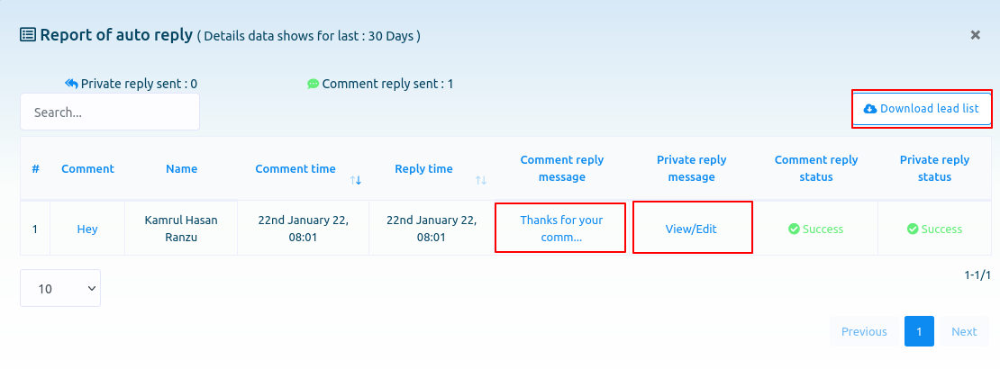By clicking on the view/edit button under the private reply message option, you can view and edit private reply message template.
Just as you click on the view/edit button, a page called edit Facebook post-back template will appear. And on the page, you can edit the postback template easily.

And under the comment reply message option, you can see the comment reply message. And if you click on the comment reply message, the post will appear under which the comment is posted.
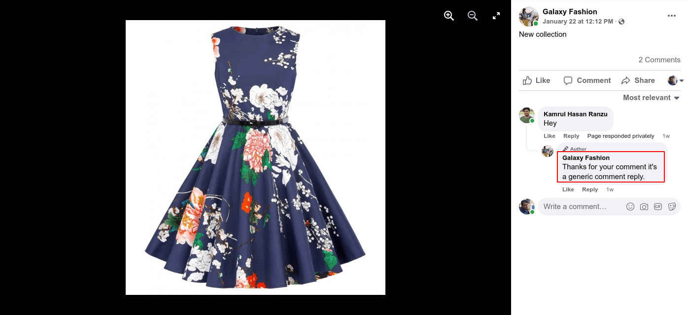By clicking on the download lead list button, you can download the lead list in a CSV file.

Likewise, by clicking on the edit, pause and delete button, you can edit, pause and delete the campaign.
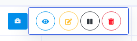Auto comment report
To see the auto comment report, click on the Auto comment report option of the drop-down menu.
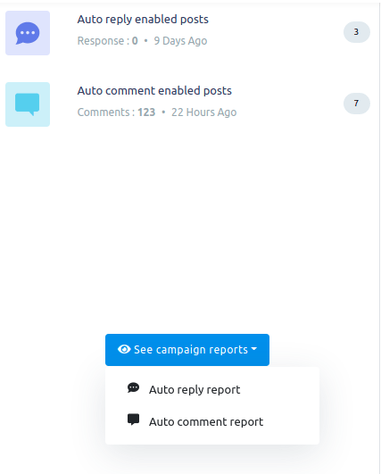Instantly, a page called All auto comment report will appear. Now click on the Action button of an Auto comment campaign and a pop-up menu of different buttons — eye icon button, edit button, pause button, force processing button and delete button — will appear.

Now click on the eye icon button and instantly, a modal form called Auto comment report will appear. And on the page, you can see the report of the auto comment report.
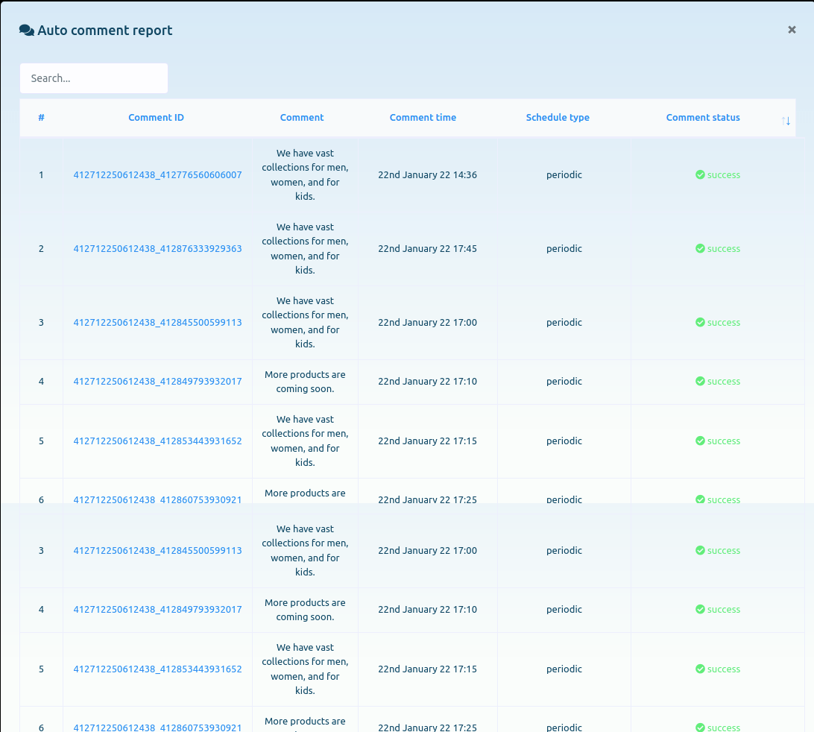Likewise, you can edit, pause, force processing and delete the campaign.
Latest Posts
Now come to the latest post sections. In the section, you can see the list of latest posts.
Now click on the gear icon of any post and a drop-down menu of different options — Enable auto reply, Enable auto comment, Check latest comments, Leave a comment now.
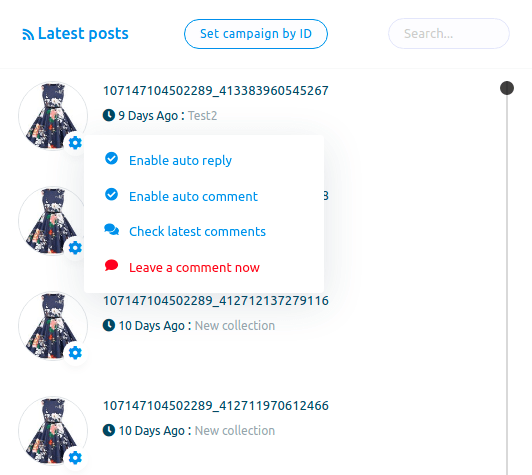Enable auto reply
To enable auto reply for the post, click on the Enable auto reply option.
Instantly a modal form will appear. Now you have to fill out the modal form.
If you want to use a saved template, keep the radio button turned on.
Now select labels from the choose labels fields. Of course, you can select multiple labels.
Then you have to select an auto reply template.
Now click on the submit button.
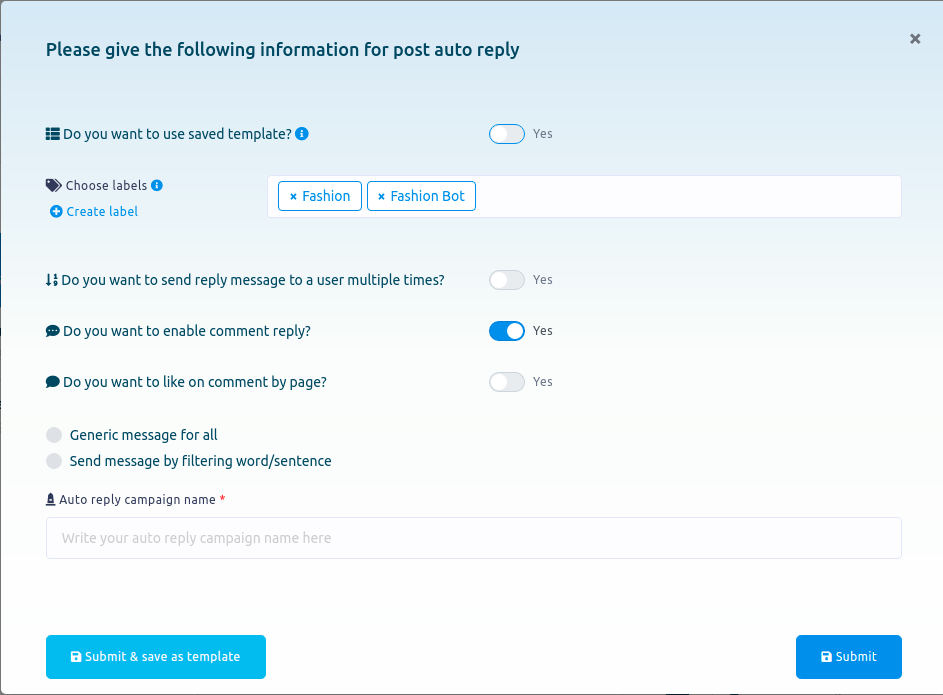Enable auto comment
To enable auto comment, click on the Enable auto comment option.
Instantly, a modal form will appear. Now you have to fill out the form.
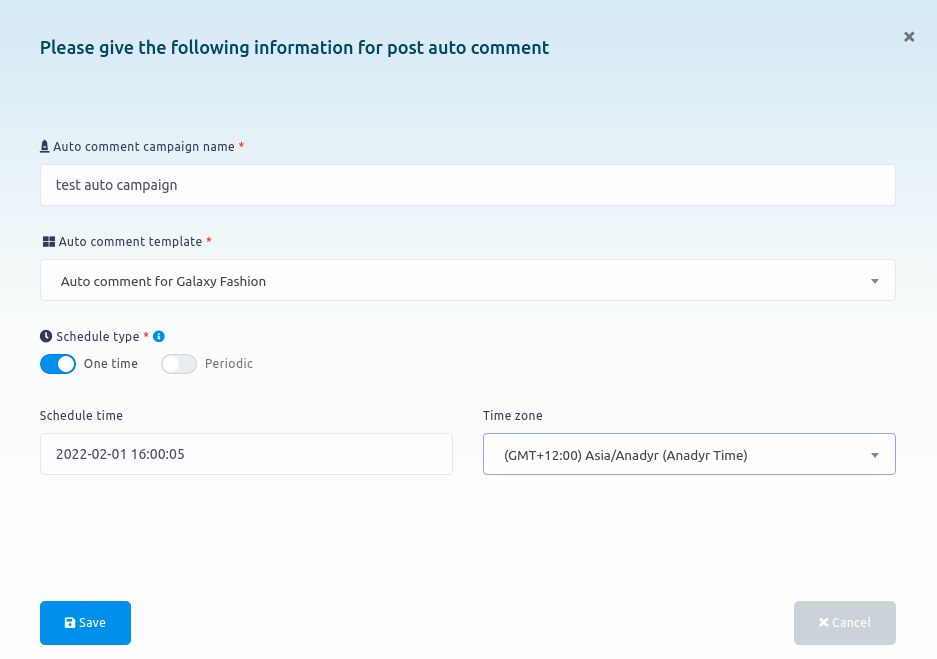Check latest comments
To check latest comments, click on the Check latest comments opinion. And instantly, all the latest comments will appear on a modal form.
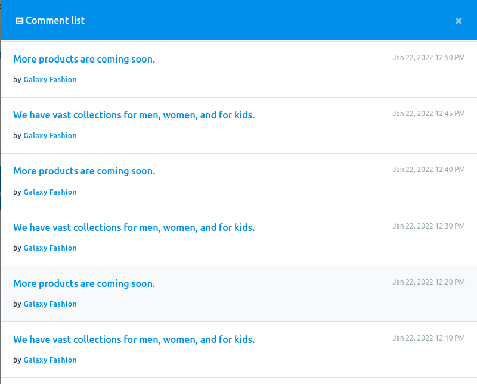Leave a comment
To leave a comment under a post now, click on the Leave a comment option.
Instantly, a modal form will appear. Write a comment in the field and click Create comment button.
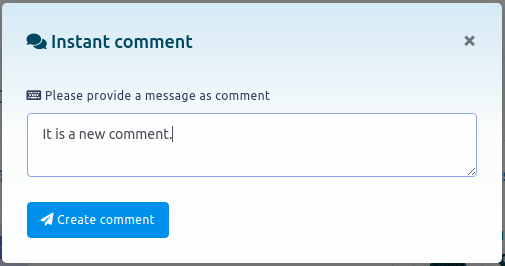Reports
Also, you can see all the reports by clicking on the Reports option.
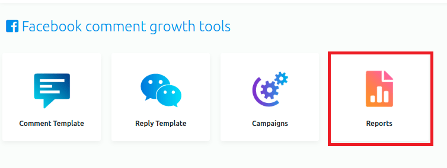